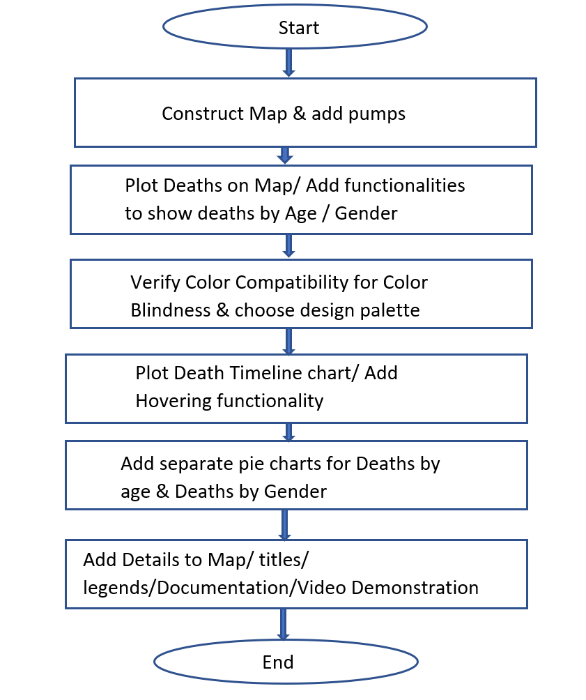

Developed By: Aishwarya Kholkute
Overview:
The project uses D3 to recreate the Cholera Map by Dr. John Snow in 1854 that was a breakthrough in identifying the cause of Cholera epidemic in London.
Design Implementation:
While designing, the most important goal was ability to derive inferences from the graphics, avoiding overuse of colors, choosing color blind compatible colors.
The charts are arranged in a four-quadrant method instead of one below the other, so as to reduce scrolling from top to bottom of the page.
The timeline graph and cholera map are placed beside each other since their interconnectivity had to be displayed.
The other two are supporting charts, hence placed below the main two charts.
The Cholera Map is placed on right since on the left, the buttons & legends are adjusted and a smaller chart (timeline graph) fit in there perfectly.
Since the area of Map chart is largest, it maintains the status of focus of webpage.
Initial Plan:
The structure planned initially was to create a layout as below, however during construction of each element, it became easier to place as per the current setting.

The Design Process:The flow chart indicates the approach.
The Finalized structure
Interpretation of the results:
As indicated in Map, a lot of deaths have happened around one particular pump on broad street.
This indicates the primary source for the Cholera epidemic was the water through that pump.
Minimal deaths around brewery supports the hypothesis that since the workers drank beer, which involved boiled water, thus killing the bacteria responsible making it safe to drink.
The timeline graph indicates the majority of deaths occured in the period 31st August-8September, and the proportion of deaths on either sides of the interval was considerably low.
The deaths by age chart indicates that people older than 80 years are the most affected category followed by young children.
This indicates which age groups are more susceptible to the disease.
The gender graph indicates that men and women are equally affected.